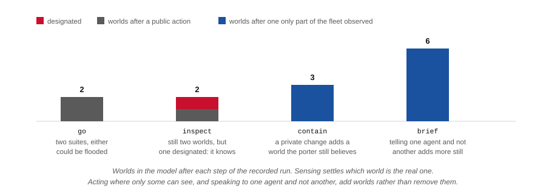

A leak is in one of two hotel suites, on two different floors, and nobody
knows which. Finding out means sending a robot up a lift to look. Shutting
the valve is quiet work in a closed suite, so the moment it is done, every
agent still downstairs believes something that was true when it formed the
belief and is false now. Repairing that belief without the guest
overhearing is the rest of the mission. Below is a recorded run over the
Open-RMF hotel demo, with two fleets, two lifts, and a policy that splits
the robots before it knows the answer.
Planned by Aletheia over
hotel-incident.epddl, executed by
eplansys on PlanSys2,
dispatched to Open-RMF by
eplansys-rmf.
The run
Two robots at once, two lifts, one branch
Gazebo on the left, RViz on the right. The captions are generated from the
run's own log, at the second each line was written: a recording of this
mission without them is a video of two robots taking lifts, because
everything that makes it worth watching happens in the model and is
invisible on the floor.
The recording is being remade and will appear here.
The leak is in the L3 suite, so the inspection comes back dry and the
policy takes its second branch.
Nothing in the recording was staged. Both robots are sent to different
floors before anybody knows which suite is flooded, because that is what
the policy says to do, and it says so for a reason worth stating plainly:
whichever way the inspection comes out, one of the two is already standing
on the right floor.
They move at the same time, and that is not free. A policy is a chain of
product updates and the executor runs it strictly in order — the tree
it renders is a Sequence, one node after
another — so two consecutive move actions are two robots moving one
after the other. Concurrency cannot be added between the nodes without
making the order of the updates ambiguous. It has to be inside a node:
one event, applied once, that relocates both agents.
Which is also the more honest reading of what is happening. Covering both
floors before anything is known is a single decision taken once, and
splitting it into two actions suggests a choice was made twice.
On the far side of the bridge that one action becomes two RMF tasks, one
pinned to each robot, and the action stays open until both report done. It
fails as soon as either does: half a joint move is not a state the model
has a world for.
In the recorded run the two robots contend for floor space on the way out
of the lobby and RMF replans one of them around the other, and it puts
each of them in the lift the plan did not name. Neither the policy nor the
epistemic model contains anything that could have anticipated either, and
neither had to.
The policy
Six nodes, and a branch nobody wrote
The planner is given the domain, the instance and no advice. What it
returns is below. That it opens with the joint action rather than two
separate moves, that it prefers the radio to the public address system,
and that the second branch needs no second lift ride are all consequences
of the goal rather than of anything written into the plan.
Solved at depth 4, 15 164 nodes expanded, and validated: two leaves,
six branches checked.
The public address system is in the domain, it is a single action, and it
would inform the porter in one step from anywhere in the building. The
planner does not use it. Nothing marks it as dangerous; it is inadmissible
only because the guest is an agent of the same model and the goal says the
guest must not learn which suite was flooded.
The model
Sensing narrows it; acting in private widens it
The interesting quantity is the size of the model, and it does not move in
one direction. These are the numbers the epistemic state reported during
the recorded run.

Worlds after each product update. The count rising is the whole point of
the domain.
The inspection leaves two worlds and designates one: the fleet still
represents both possibilities, and now knows which of them it is in.
Shutting the valve adds a world, because the porter is on another
floor and did not see it: there is now the world in which the valve is
shut and the world the porter still believes in, where the suite is
flooded. That second world is a false belief in the strict sense, and it is
why the reachable state space here is \(\mathrm{KD45}_n\) rather than
\(\mathrm{S5}_n\) — accessibility loses reflexivity the moment an
agent believes something that is not so.
The radio call adds worlds again rather than removing them. Telling one
agent and not another is a distinction, and a model that has to represent
what the guest still believes needs somewhere to put it.
The seam
What each system is allowed to decide
The hotel demo that ships with Open-RMF is a traffic problem: three fleets,
two lifts and a corridor, and RMF works out who goes first. Nothing in it
is ever in doubt. The mission above adds the doubt and hands the traffic
back.
The bridge is a PlanSys2 performer that submits one RMF task per action
and finishes with what the robot observed.
A go from the lobby to the L3 suite is one
action in the epistemic model and one line in the plan. On the other side
of the bridge it is a lift call, a door, a floor transition and a
negotiation with whichever cleaning robot wanted the same lift. The Kripke
model contains no lift, and the traffic schedule contains no knowledge.
Neither system can express the other's subject, which is the reason there
are two of them.
Allocation has to be pinned
Both systems allocate. The planner assigns actions to named agents while it
searches, and the epistemic model records knowledge against those names;
RMF's dispatcher takes bids and picks a robot. If they disagree, the model
records that an agent knows something it never sensed, and nothing raises
an error. So the bridge binds each agent to one robot and submits a
robot_task_request, which the named
robot's own task manager accepts without a bid. RMF's traffic management is
kept in full; only its allocation is given up.
An agent bound to no robot is a hard refusal rather than a fallback. The
guest is exactly such an agent: it is who the mission must not inform, and
it never moves.
The awkward part
An RMF task will not carry an answer back
A sensing action's whole point is to find something out, and the policy
branches on what it found. So the bridge has to get a token back from the
fleet. Open-RMF will not give it one: a task's completion is a status from
a fixed enumeration and a finish time. There is no result, return or output
property anywhere in task_state.json, and
ActionExecution::finished() — the
call a performer makes when it is done — takes no argument at all.
Two free-form fields do travel with a task, and the bridge reads both: an
event's detail string, and the log entries
a performer writes. A value carrying the prefix
eplansys.outcome= in either is read as the
token the policy branches on. On Humble that stream leaves the fleet
adapter over the websocket named by its
server_uri parameter and over nothing else,
so the bridge is the server the adapter dials.
In the recorded run the token is supplied by the task map rather than by a
water sensor, and the bridge says so in the log every time it falls back. A
fleet adapter that reported what it measured would override it, and the
branch would be taken on the measurement instead. Everything upstream of
that line is the same either way.
The argument chooses which suite is actually flooded, and the two values
take the policy down its two branches with the robots really driving each
one. The world, the fleets and the lifts are the stock
rmf_demos hotel; nothing in it was
modified for this.
bash scenarios/hotel/record_demo.sh # films it, captions and all
plank export -d hotel-incident.epddl -p instances/problem_2.epddl -l $LIB -o out
epistemic_planner --task out/problem_2.json --plan plan.json --explain
The domain and its instances are in
epddl-workspace/hotel-incident/. The
demo package installs them from there rather than keeping a copy, so what
the robots execute and what plank validates are one pair of files.